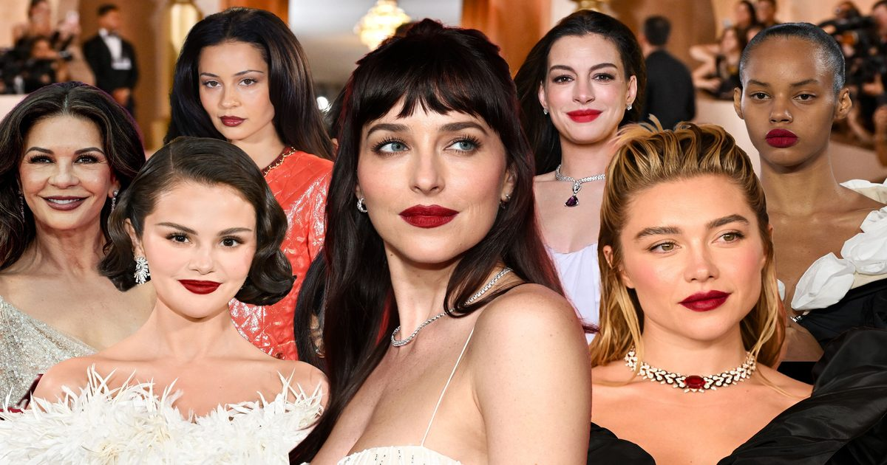

Жирная пигментированная помада снова в тренде
После многих лет тонированных бальзамов и едва заметных пятен знаменитости и любители красоты снова выбирают полноразмерный пигмент.
У профессионалов есть некоторые мысли о смелой новой эре традиционной помады.